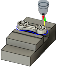

Permet de spécifier le processus de fabrication.

Fraisage Tous les types demachines de fraisage.
Tournage Tours 2axes, tours avecconfigurations de fraisage/tournage.
Découpe Pour les configurations Jet d'eau, Laser ouPlasma.
Additif Pour l'impression 3D avecpoudre métallique oufilament extrudé.